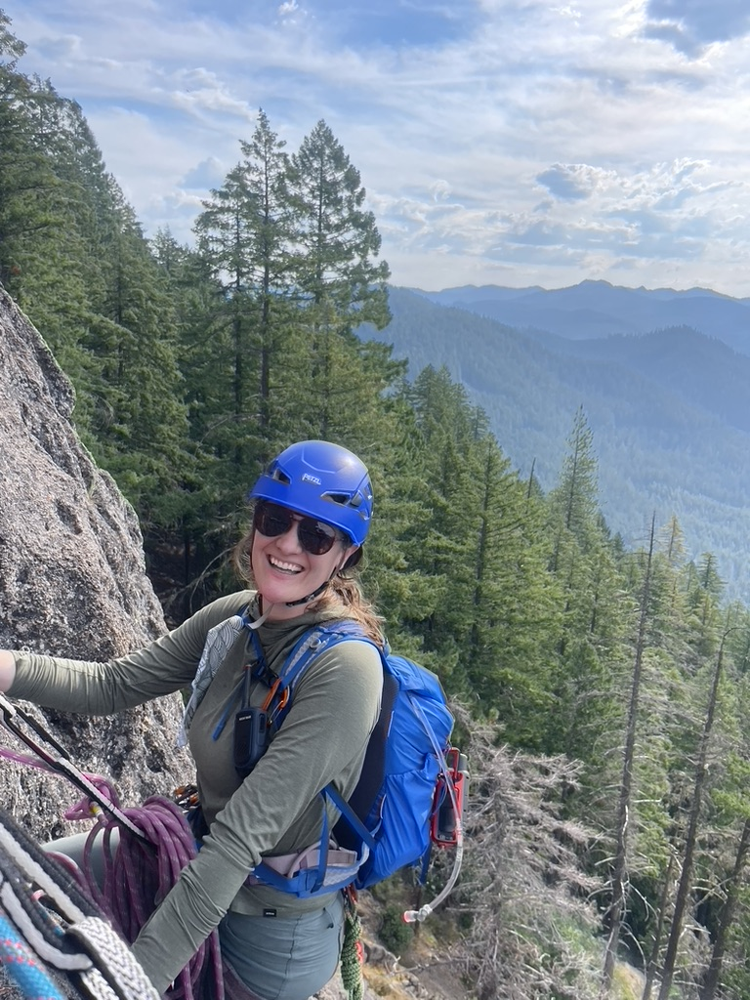
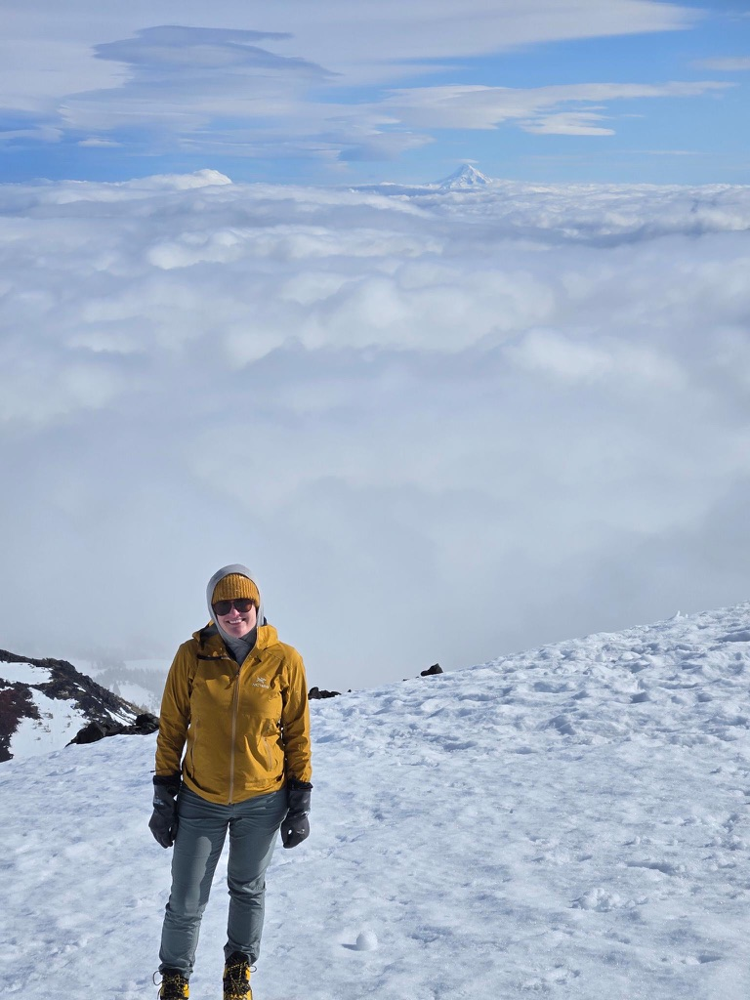

I am a data scientist and CFA Charterholder specializing in the intersection of financial analysis, automation, and business development. I thrive in projects where I can take time-consuming technical processes and make them faster without sacrificing intellectual rigour or marketing polish. I am a subject matter expert in estate-planning and tax-efficient investing, and I build systems that integrate my best-in-class planning expertise into automated pipelines for fast-moving teams. I also work to create structured data around these automated processes to support long-term growth by enabling data-driven management and AI-ready knowledge graphs.
I recently completed a Master's of Data Science at Willamette University, where I worked with researchers at the University of Oregon to build a database that integrates over 40 years of production and pricing data from Oregon wine producers with daily climate metrics. We are working to make this dataset publicly available with the goal of bringing greater insight into the long-term impact of climate change on Oregon's wine-growing regions. I am also working on a fun side project with theme park data, where I am experimenting with recurrent neural networks to predict real-time crowd movement.
Outside of work, you can find me looking for any excuse to be outdoors. I enjoy walking, hiking, backpacking, camping, skiing, paddleboarding, rock climbing, and mountaineering. I also love good food and good drinks, whether at home with my ever-increasing cookbook collection or out at new restaurants with friends and family. I am working toward my WSET Level 3 wine certification, and I enjoy searching for truly great wines that are also very affordable.